Nadad Oir brand identity
2023 to 2024
Nadad Oir means “near me”. Most map apps answer one question, how do I get there. I wanted one that answers a different one: what is near me worth doing right now, and what do I get for going. This is the brand I built for that idea at Minu, from a 66-slide research deck to a radar that became both the logo and the interface.1
A map you open to find something to do
Minu’s terminals sit in thousands of shops, salons and cafes. That gave me a strange and useful starting point for a map: every pin on it could be a place that already knew how to reward you. So the app is not organised around roads. It is organised around a circle you draw around yourself, and what falls inside it.
I wrote the concept as three overlapping circles, in Mongolian, because the name only works in Mongolian. Юу, what, the need. Хэн, who, me. Мэдрэмж, the feeling, nearness. The name sits where they overlap.
What I need, for me, close by. The middle two words are the name.
Under each circle I listed what it could hold. Need: a barber, a restaurant, a shop, a service. Me: me, you, us, everyone. Feeling: near, fast, easy, clear. Every screen I drew later had to be answerable to one of those three columns.
Two shelves of research and one city
Before the concept I filled two shelves. A global one, where I took apart 2GIS, Google Maps, Apple Maps and Maps.me screen by screen, and a local one, where I did the same to the Mongolian apps people actually have installed, GS25’s loyalty app among them, because that is the competition for the loyalty half of the idea.
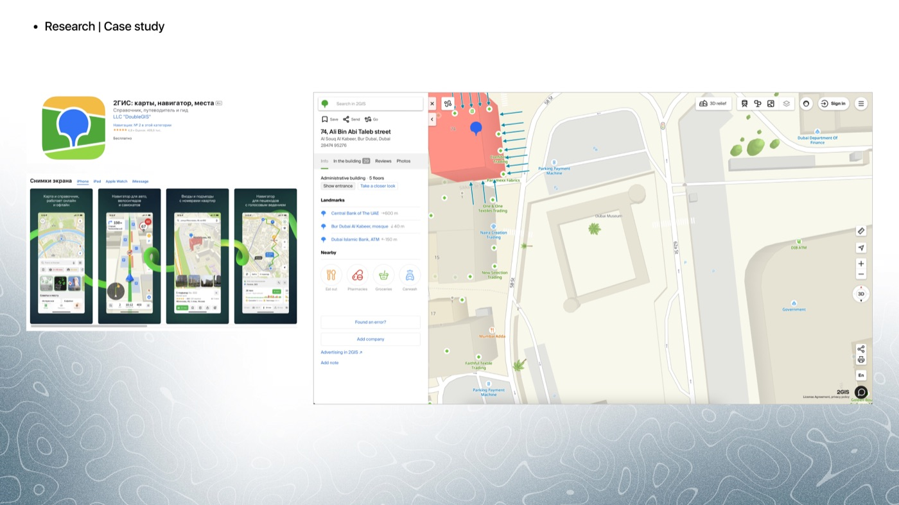
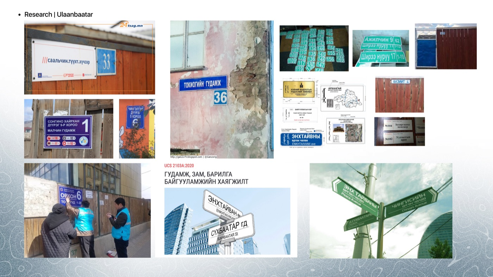
The third shelf was the city itself. I photographed Ulaanbaatar’s address plates and street signs and pulled the 2020 national standard that governs them, because a map for this city should read like its signage, and because I had one question written at the top of the slide: how do we give this an Ulaanbaatar touch that is not a pattern from a deel?2
Friendly, knows the city, a little cute
I set the voice before the visuals, in three words a copywriter could argue with. Friendly, the app talks like a mate who says let’s be friends. Knowledgeable, it asks how can I help and means it. Cute, but only a little. The feeling I wanted on the other side was comfortable, close, and interesting enough to open when you are bored.
- User-centred
- Comfortable and easy. If a screen needs explaining, it is wrong.
- Modern
- New, technical, willing to look like software rather than a brochure.
- Engaging
- Interesting and fun. A map you open without a destination has to reward the opening.
- Responsive
- Flexible. The radius, the cards and the offers all move with you.
Colour two Pantones and the ink they sit with
Green because the radar needed a colour that reads as a signal, and because the two Pantones together, a grass green and a lime, feel like going outside. I kept one warm colour and gave it to the heart alone, so that whenever red appears in the app it means somebody liked something.
Pin, me, radar, progress
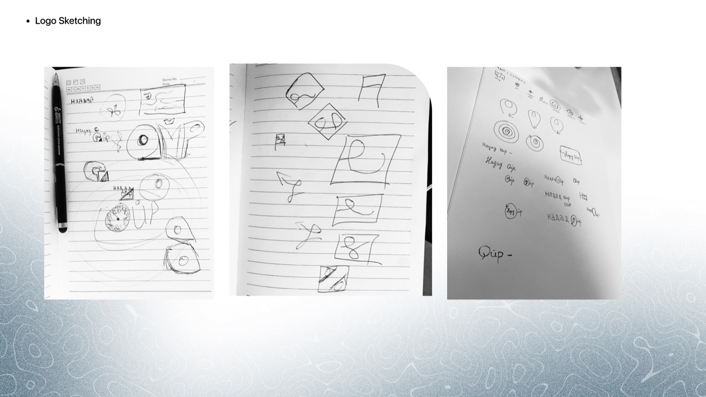
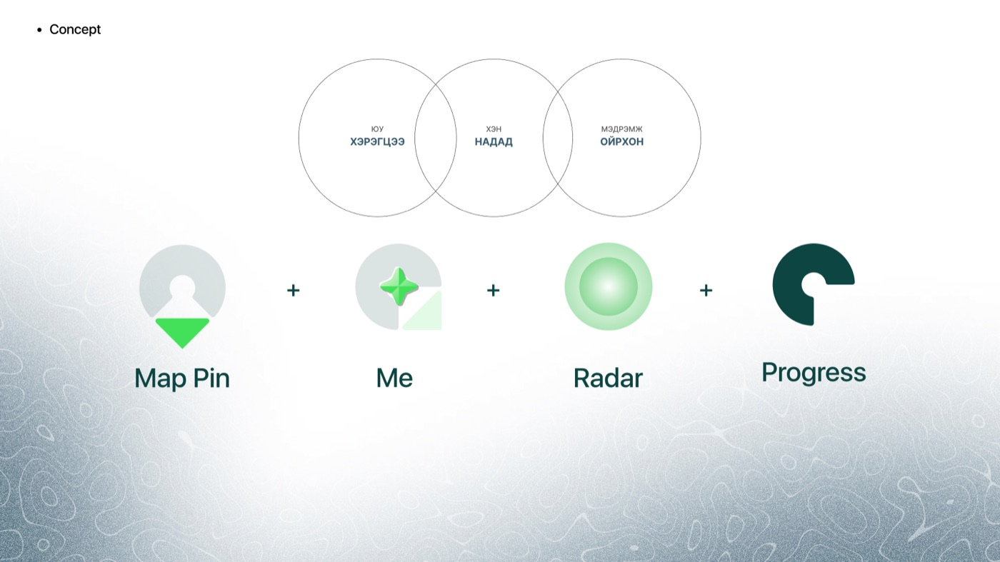
I began by listing every symbol a map already owns: the folded map, the pin, the GPS dot, the navigation arrow, the radar, the turn arrow, the compass. Then the symbols loyalty owns: the star, the heart, the present. The mark had to come from one of each, or it would be a map logo or a rewards logo and not this thing.
The equation I landed on has four terms. A map pin, because you are somewhere. A four-pointed star for me, the person at the centre. Radar rings for the radius you search inside. And a ring with a gap for progress, because loyalty is a circle you are filling in.
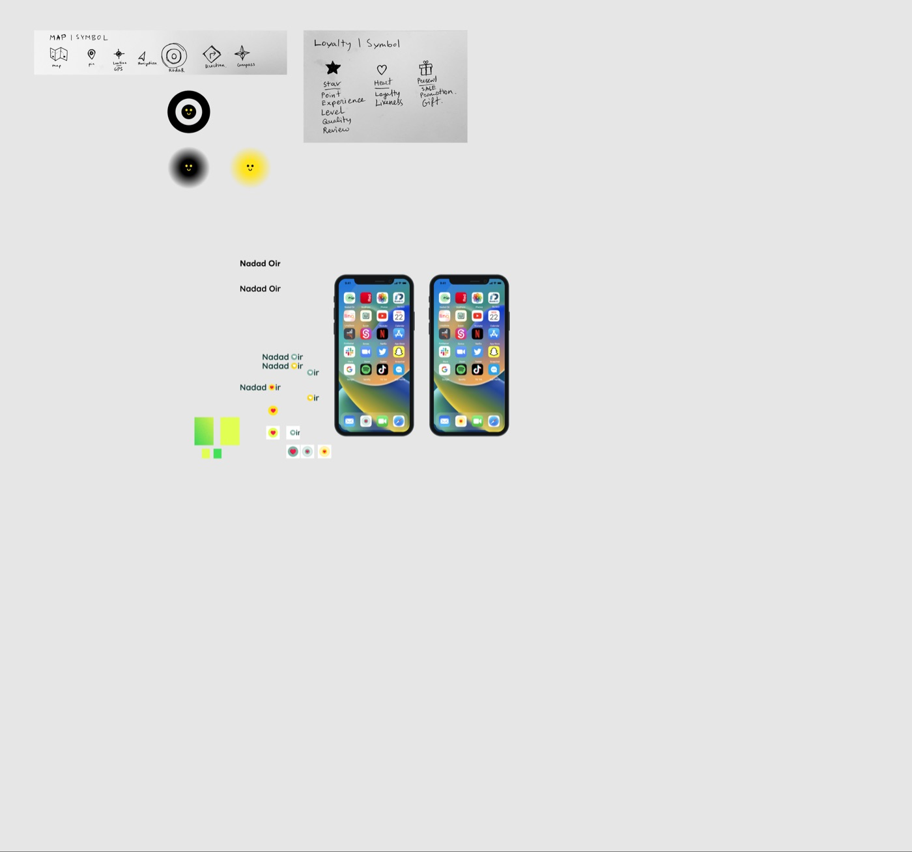
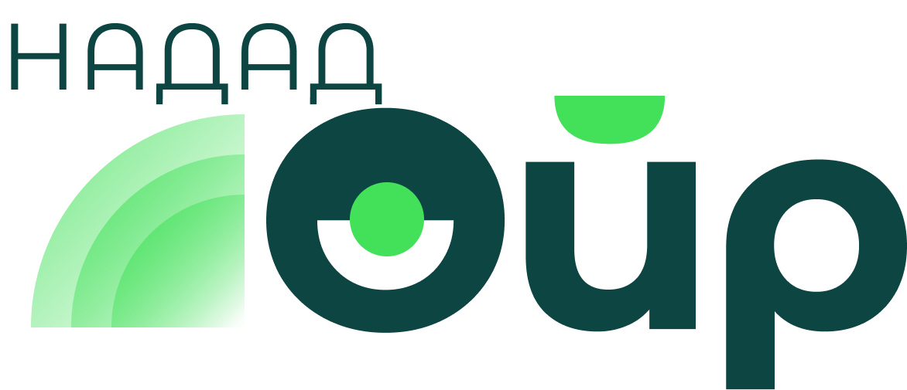
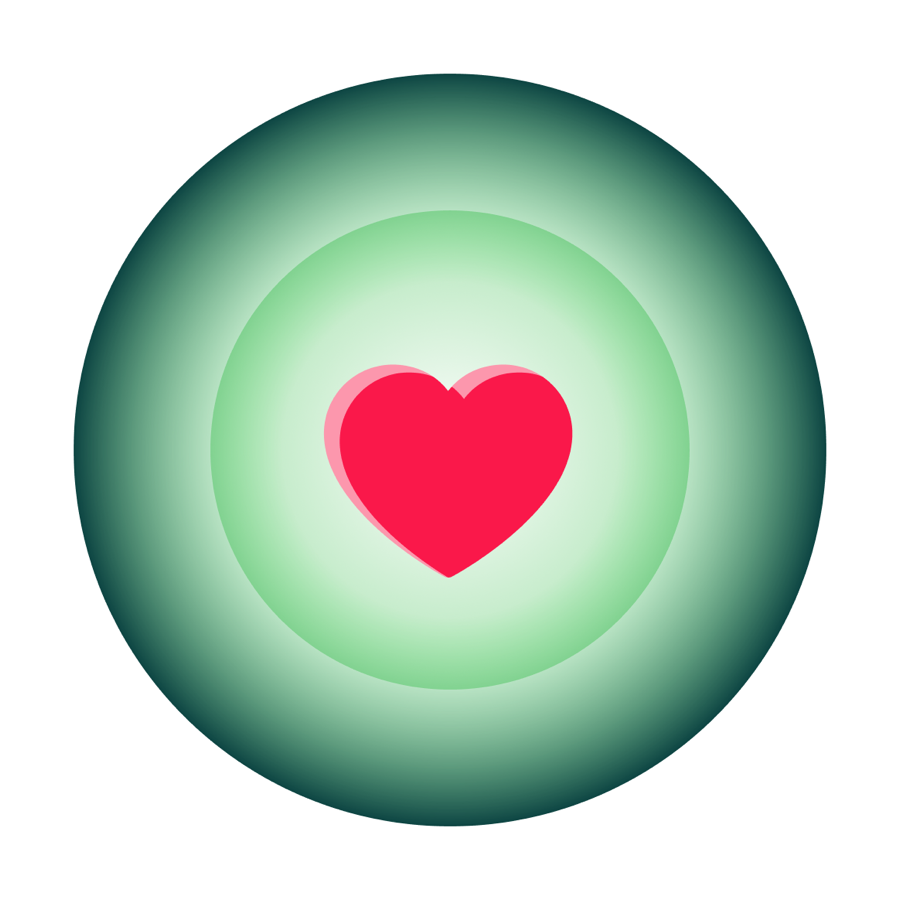
The wordmark is Ойр, near, set large, with НАДАД, to me, small above the radar arcs. I did that on purpose. In the sentence the important word is near. The O is cut like a pin with the green dot at its centre, so the logo reads as a radar even at favicon size, and the heart moved to the app icon, where the place at the centre of your radius is one you like. I tested the icon on a home screen next to the apps it would live between, which is the only test an icon really faces.
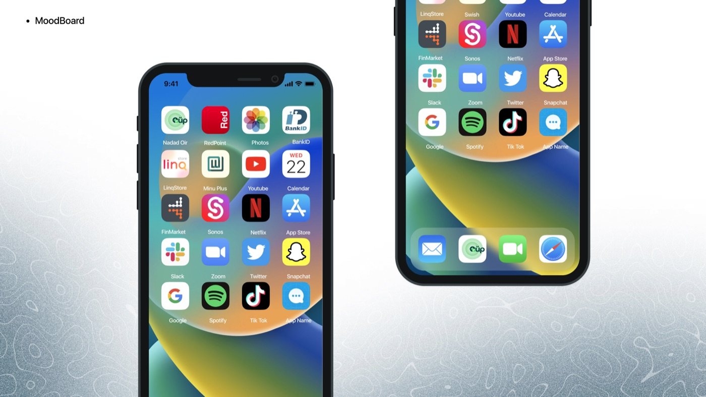
The radar is the interface
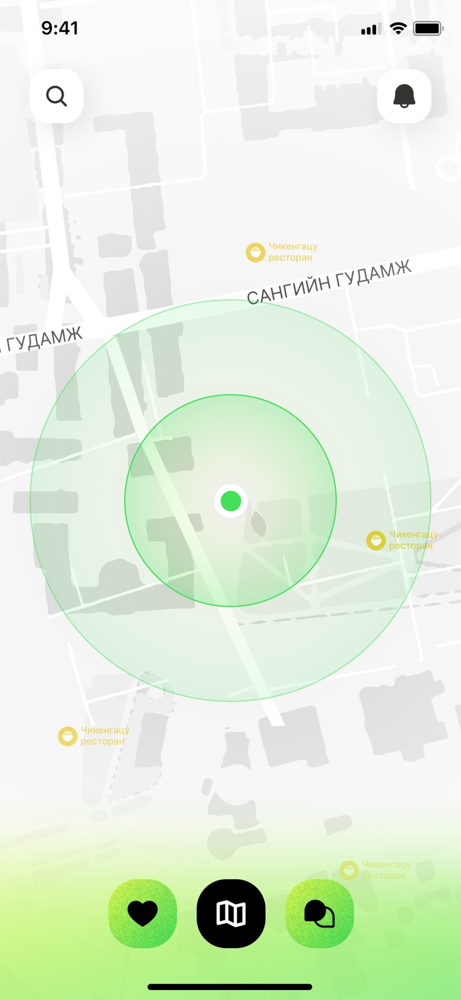
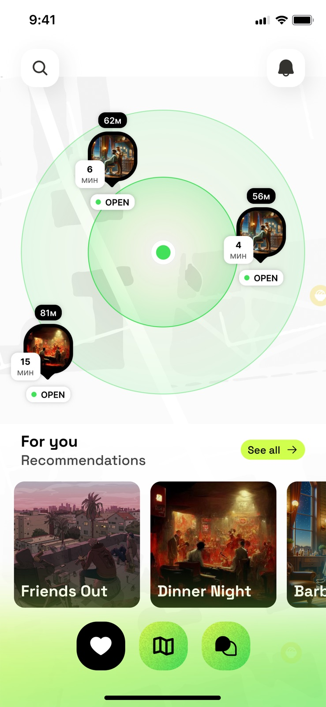
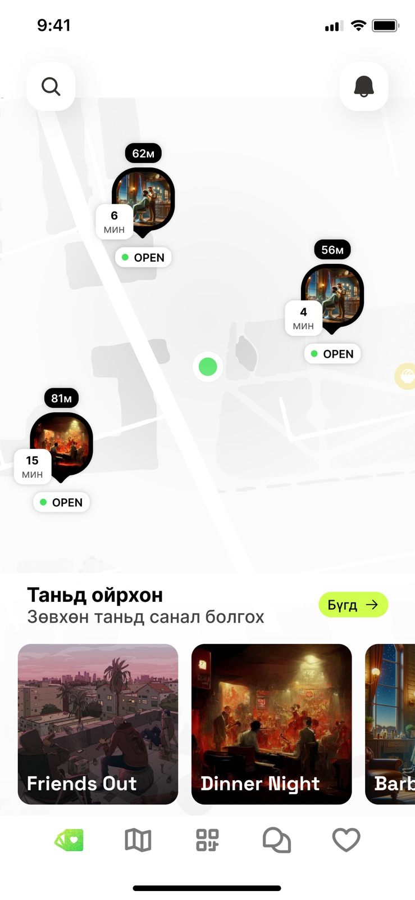
I put the radar on the map because the map is the one place the brand and the product can be the same shape. You see your radius. Places inside it show a photo, the distance, the minutes it takes on foot and whether they are open, and nothing else, because those are the four facts you need before you stand up. Under the map, recommendations by mood rather than category: friends out, dinner night, barber.
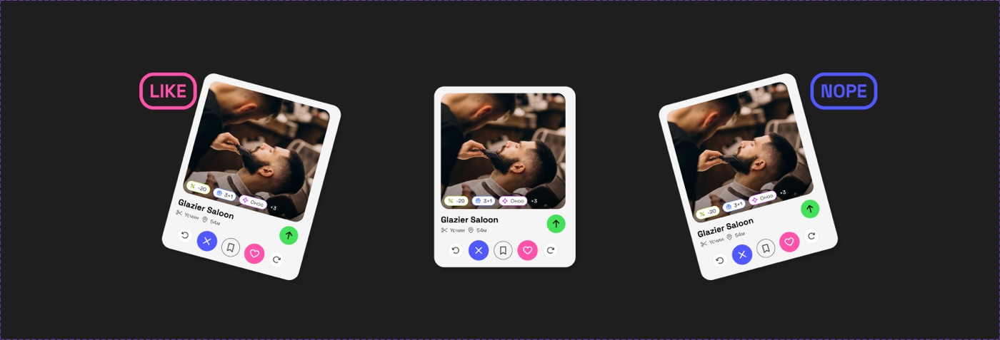
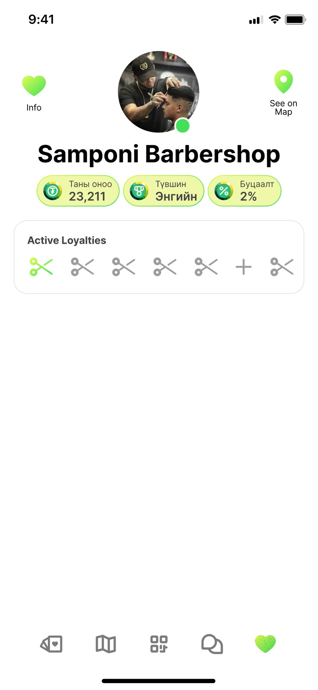
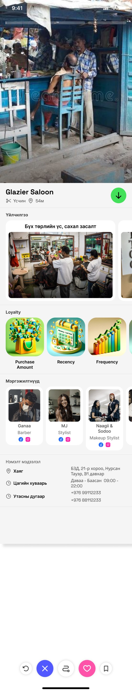
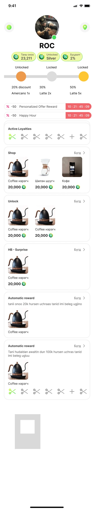
The merchant page is where the two halves meet. Points, tier and cashback sit in three lime pills under the name, and the stamp card is drawn with the shop’s own tool, scissors for a barber, so a customer knows at a glance how many visits are left. On the place page the offers are tags, not paragraphs, because an offer you cannot read from across the room is not an offer.3
Twelve ways a shop can say thank you
Under the interface I wrote the loyalty engine as a list. Twelve mechanics, each with a one-line definition in English and Mongolian, so that a merchant could pick from a menu and a developer could build to a spec. It is the least glamorous slide in the project and the one I would show a product manager first.
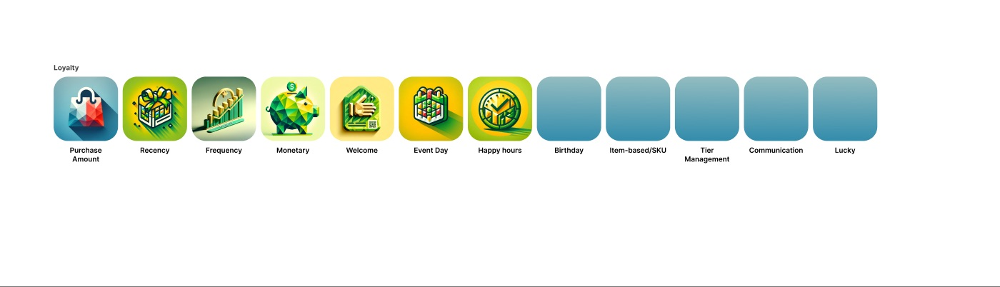
- Purchase amount
- Points scale with what you spend.
- Recency and frequency
- Reward how recently, and how often, you came back.
- Monetary
- Cumulative spend over time.
- Welcome
- Something for the first use of the card or QR.
- Event day, recurring hours, birthday
- Special days, happy hours, and the customer’s own day.
- Item-based
- Rewards tied to what is in the basket.
- Tier management
- Levels from a year of points, the way Nomin does it.
- Communication
- Email, SMS and push, so the shop can say it.
- Lucky
- Every nth transaction wins. The pop-up says congratulations, you were our lucky buyer.
A pin is a promise. If the map shows a place, the place should be able to say thank you in a way its owner chose.
Where it stands
The deck ends on a slide that says let’s make people’s lives easier every day, next up: user interface, and the interface file that followed is a concept, not a shipped product. The screens carry generated placeholder imagery and the loyalty icons are five short of twelve. I am showing it anyway, because the thinking is finished even where the pixels are not.
What I would want someone hiring me to take from Nadad Oir is the order of operations. Two shelves of research and a walk through the city before a single sketch. A concept small enough to write in three words. A logo built from an equation I could explain to an engineer. And an interface where the brand mark and the core interaction are the same drawing, which is the thing I am proudest of here and would do again.
- The research file holds 66 slides in its final row, from a competitive analysis through concept, colour, moodboards, sketching and lockups to the interface in action. The interface lives in a second file with two process pages, dated December 2023 and January 2024.
- The standard on the slide is UCS 2103A:2020, the Mongolian rules for street, road and building address plates.
- The photographs in the interface screens are placeholders, several of them generated, standing in for merchant photography that a live product would supply.